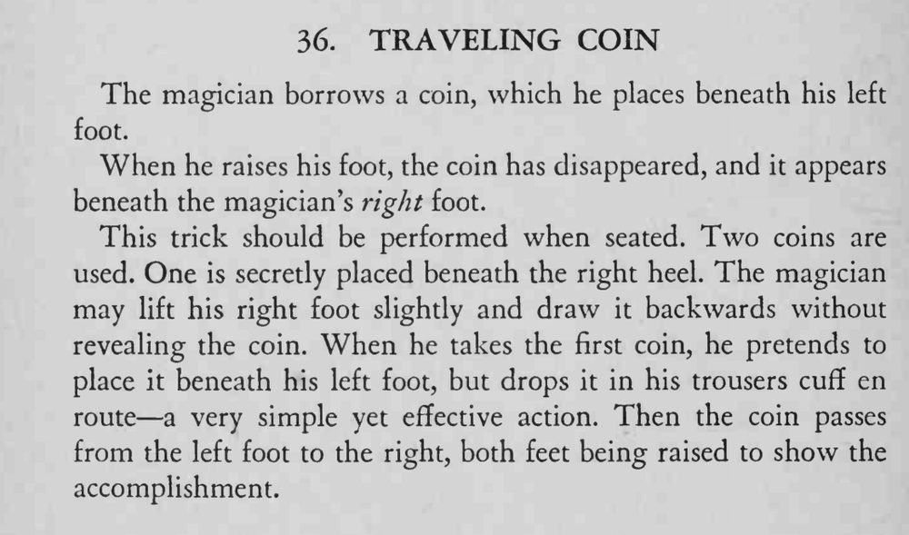

借来的硬币放在左脚底下，抬脚一看硬币不见了，竟出现在右脚底下。
转移硬币要在抬脚、收脚的遮掩下完成；两脚展示的顺序不能乱。

The magician borrows a coin, which he places beneath his left foot. When he raises his foot, the coin has disappeared, and it appears beneath the magician's right foot. This trick should be performed when seated. Two coins are used. One is secretly placed beneath the right heel. The magician may lift his right foot slightly and draw it backwards without revealing the coin. When he takes the first coin, he pretends to place it beneath his left foot, but drops it in his trousers cuff en route a very simple yet effective action. Then the coin passes from the left foot to the right, both feet being raised to show the accomplishment.